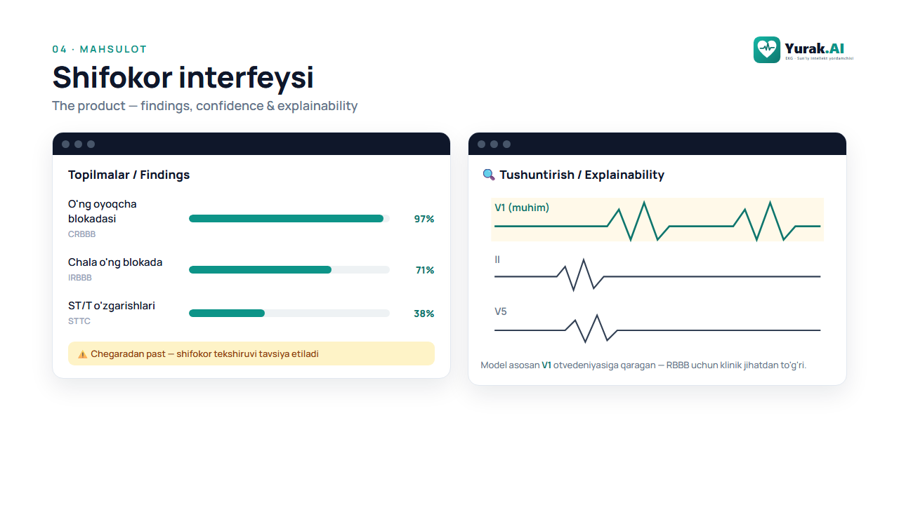

Qog'oz EKG tasmasi fotosidan 12 kanal tiklanadi — yangi qimmat uskuna shart emas.
«Model qayerga qaragani» xaritasi ko'rsatiladi; yakuniy tashxisni shifokor tasdiqlaydi.
To'liq offline ishlaydi, bemor ma'lumotlari muassasadan chiqmaydi (ZRU-547).
O'zbek/rus/ingliz, shifokor imzosi, logotip va QR bilan — bir bosishda.

Demo, texnik tafsilotlar va taqdimot bo'yicha bog'laning.
b.umidkhonov@gmail.com